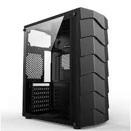
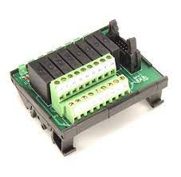

1.1COMPONENTES INTERNOS
Em Ciência da Computação, entende-se como hardware interno componentes como processador, placa-mãe, memória RAM, placa de vídeo, coolers e ventoinhas, cabos internos, fonte, HD, SSD, unidades ópticas (drives de CD/DVD/Blu-ray), etc
1.1.1 CPU
Basicamente, um processador é uma poderosa máquina de calcular. O componente recebe um determinado volume de dados, orientados em padrão binário 0 e 1 e tem a função de responder a esse volume, processando a informação com base em instruções armazenadas em sua memória interna.
1.1.2 Armazenamento
Uma unidade de disco rígido ou uma unidade de estado sólido retém todos os dados arquivos, fotos, programas, músicas e vídeos que o usuário quer guardar. Dispositivos de armazenamento externos e removíveis, como pendrives e CDs e DVDs de leitura ou regraváveis também são armazenamentos secundários.
1.1.3 Memória
A memória do computador ou a memória de acesso aleatório (RAM) é o armazenamento de dados de curto prazo do sistema. Ela armazena as informações que o computador está usando ativamente para que elas possam ser acessadas rapidamente. Quanto mais programas o sistema executar, mais memória você precisará.
1.1.4 Fonte de alimentação
As fontes de alimentação possuem função principal de transformar a corrente elétrica da rede, que chega em uma voltagem alta, para uma voltagem menor, que é a indicada para o hardware do computador. Geralmente a rede elétrica possui a voltagem em 110V ou 220V.
1.2 Componentes externos
componentes externos são os periféricos utilizados para que o usuário consiga interagir com a máquina: monitor, teclado, Mouse, caixas de som, impressora...
1.2.1 Teclado
Na computação, o teclado de computador é um dispositivo que possui uma série de botões ou teclas, utilizado para inserir dados no computador. É um tipo de periférico de entrada utilizado pelo usuário para a entrada manual no sistema de dados e comandos.
1.2.2 Monitor de vídeo
Um monitor é um dispositivo de saída do computador, cuja função é transmitir informação ao utilizador através da imagem.
1.2.3 Mouse
O mouse faz parte dos periféricos do seu computador e é a parte que no permite interagir com os objetos que aparecem na tela através de um cursor que podemos ver no monitor.
1.2.4 Impressora
Impressora ou dispositivo de impressão é um periférico que, quando conectado a um computador ou a uma rede de computadores, tem a função de dispositivo de saída, imprimindo textos, gráficos ou qualquer outro resultado de uma aplicação.
1.2.5 Plotter
A plotter é uma impressora que foi feita para imprimir trabalhos de qualidade em grandes dimensões, como por exemplo, mapas cartográficos, projetos de engenharia, gráficos e plantas arquitetônicas e podem utilizar diversos tipos de papel como papel comum, fotográfico, película, vegetal, autoadesivos, lonas e tecidos ...
1.2.6 Scanner
Um scanner é um instrumento de captura, utilizado para digitalizar documentos, transformando documentos de papel em uma imagem digital. Além de facilitar a digitalização de documentos, o equipamento não tem um custo muito elevado.
1.2.7 Gabinete
o gabinete é apenas um compartimento externo que tem como função proteger os dispositivos internos
1.2.8 Web Cam
Uma webcam é uma câmara de vídeo que está, em regra, ligada diretamente a um computador. É um dispositivo de hardware de entrada de sinal (input), cuja função é a captação de imagem e vídeo. Estes dispositivos podem ser usados para realizar videoconferência ou transmitir ininterruptamente determinados eventos.
1.2.9 Caixas de som
Caixas de som para PC são acessórios importantes para quem gosta de jogar, assistir filmes ou ouvir músicas no computador. No Brasil, marcas como Multilaser, Redragon e HP oferecem desde opções mais simples, de entrada, até modelos mais avançados, focados no público gamer.
1.2.10 Microfone
Um Microfone Para Pc é um dispositivo que converte som em um sinal elétrico. Ele pode ser usado para gravar áudio ou para comunicação online através de programas como Skype, Google Hangouts e Yahoo Messenger.
1.2.11 Head Set
Ele é um aparelho que funciona com fone de ouvido, conta com um teclado pra digitar os números e uma telinha que mostra quem tá ligando!
1.3 Interfaces de entrada e saída
As interfaces de entrada e saída são responsáveis pela conexão entre as várias partes de um sistema computacional baseado na arquitetura de Von-Neumann.
1.3.1 Interfaces sem fio
A comunicação sem fio é um dos modos de conectividade mais desejados entre dois ou mais dispositivos. Nessa tecnologia, a comunicação de dados é realizada por meio de ondas eletromagnéticas, como frequências de rádio, infravermelho e satélite, ao invés de cabos e fios.
1.3.2 Áudio
Placa de som é um dispositivo de hardware que envia e recebe sinais sonoros entre equipamentos de som e um computador executando um processo de conversão entre a forma digital e analógica para outros periféricos como fones de ouvido ou provendo interfaces para outros equipamentos digitais.
1.3.3 Rede (Ethernet)
A ethernet é especificamente uma tecnologia que serve para a conexão de redes locais, as redes de LAN, através de envio de pacotes de dados (ou informações). A principal função da ethernet é realizar a conexão entre dispositivos em uma mesma rede através de fios, com os chamados cabos ethernet.24
1.3.4 VGA
VGA é a sigla para Video Graphics Array (ou Matriz Gráfica para Vídeo, em português), que identifica o padrão para displays gráficos desenvolvido pela IBM em 1986, e usado pela primeira vez no ano seguinte, com a linha de computadores pessoais IBM PS/2.
1.3.5 HDMI
O que é HDMI e para que serve? O HDMI é um conector que transmite dados de um dispositivo ao outro. Neste caso, a tecnologia é focada em transmitir imagem e som. Entre os avanços tecnológicos, podemos destacar uma melhor qualidade e velocidade do som e da imagem transmitidas entre um notebook e um monitor, por exemplo
1.3.6 USB
USB é a sigla em inglês de Universal Serial Bus (“Porta Universal”, em português), um tipo de tecnologia que permite a conexão de periféricos sem a necessidade de desligar o computador, além de transmitir e armazenar dados.
- 2.1 Potência elétrica
- 2.2 Tensão elétrica
- 2.3 Corrente elétrica
2.GRANDEZAS ELÉTRICAS
2.GRANDEZAS ELÉTRICAS
Quais são as principais grandezas elétricas? Neste artigo vamos falar o que é tensão, corrente, resistência e potência elétrica. Entenda quais são as suas unidades de medida, e como cada uma dessa grandezas se comportam no circuito em série ou em paralelo. Vamos lá pessoal!
2.1 Potência elétrica
A definição de potência elétrica basicamente é a velocidade com que o equipamento converte a energia elétrica em trabalho. Caso você não saiba, o watt (W) é a unidade de potência no sistema internacional de medidas. Nos equipamentos elétricos, a potência indica qual a quantidade de energia elétrica que é transformada em outro tipo de energia por unidade de tempo. O micro-ondas por exemplo, precisa de uma determinada quantidade de watts (potência), para gerar o trabalho, que no caso deste equipamento é o aquecimento.
2.2 Tensão elétrica
A tensão elétrica é caracterizada como uma diferença entre o potencial elétrico de dois pontos. Resumidamente, podemos dizer que a tensão elétrica é a força necessária para movimentar os elétrons, criando uma corrente elétrica.
Saiba que a diferença de potencial pode representar uma fonte de energia (força eletromotriz). E também pode representar uma perda de energia ou armazenamento (queda de tensão).
Tensão continua Quer dizer que ela não muda de polaridade no tempo. A pilha é um grande exemplo de funcionamento com tensão contínua, porque a polaridade da pilha sempre será a mesma no decorrer do tempo. Tensão alternada No caso da tensão alternada, a polaridade vai ser alternada de acordo com a frequência. Na tomada, a frequência normal é de 60Hz, então significa que a polaridade desta tensão alterna 60 vezes por segundo
2.3 Corrente elétrica
A corrente elétrica é caracterizada como o fluxo ordenado de cargas elétricas, ou seja, elas se movem de forma orientada. Ela é uma das grandezas fundamentais da Física, porque sem a corrente elétrica, nenhum aparelho elétrico ou eletrônico iria funcionar!
3 UNIDADES DE MEDIDA
- UTILIZADAS NA INFORMÁTICA
- 3.1 Capacidade de armazenamento
- 3.1.1 bit
- 3.1.2 Byte
- 3.1.3 Múltiplos
- 3.2 Frequência
- 3.2.1 Hert
- 3.2.2 Múltiplos
- 3.3 Largura de banda
- 3.3.1 Capacidade do canal
- 3.3.2 bit/seg (bps)
- 3.3.3 Múltiplos
- 3.4 Taxa de transferência
- 3.4.1 Tráfego no canal
- 3.4.2 Byte/seg (Bps)
- 3.4.3 Múltiplos
UTILIZADAS NA INFORMÁTICA
3.1 Capacidade de armazenamento
Ao discutir o armazenamento do computador, o termo "capacidade" refere-se à quantidade de dados que um determinado dispositivo pode conter. A capacidade de um dispositivo de armazenamento é normalmente medida em gigabytes (GB) ou terabytes (TB). Um gigabyte é igual a um bilhão de bytes, enquanto um terabyte é igual a um trilhão de bytes.
3.1.1 bit
O bit é uma unidade binária - ou seja, pode ter apenas dois valores, zero ou um - que serve de base para o armazenamento e processamento de informações em um computador. Tudo o que existe no seu computador ou na internet é formado por um número determinado de bits.
3.1.2 Byte
Um byte (símbolo “B”) ou octeto é um pacote que agrupa oito bits, que equivale a um caractere na tabela ASCII (uma letra, um número, etc.), por cada byte contar com 256 combinações possíveis ou 28 combinações. É a unidade geralmente usada para determinar espaço de armazenamento e quantidade de memória RAM.
3.1.3 Múltiplos
3.2 Frequência
Clock ou frequência é um termo utilizado para determinar a velocidade de um processador de um computador em Hertz (Hz). Basicamente, ele define a quantidade de ciclos que o componente consegue realizar a cada segundo.
3.2.1 Hert
O que é hertz no monitor? Jogar com uma alta taxa de atualização pode fazer uma grande diferença. Aqui está o que você precisa saber sobre como testar, otimizar e escolher um monitor com uma alta taxa de atualização.
3.2.2 Múltiplos
3.3 Largura de banda
A largura de banda ou bandwidth (termo original em inglês) é a medida da capacidade de transmissão de um determinado meio, conexão ou rede, relacionada à velocidade que os dados passam através desta rede específica.
3.3.1 Capacidade do canal
A capacidade do canal é uma métrica muito usada para a quantidade máxima de tráfego ou sinal que pode se mover sobre um canal de infraestrutura específico. É útil em ciência da computação, em engenharia elétrica e em outras disciplinas que avaliam a capacidade de um canal ou canal.
3.3.2 bit/seg (bps)
Unidade de medida do débito da transmissão de dados utilizada para indicar o número de bytes transmitidos por segundo.
3.4 Taxa de transferência
O que é taxa de transferência de arquivos? A taxa de transferência de dados é a velocidade real do HD ao ler arquivos gravados em setores sequenciais. Se você tivesse à mão todas as especificações de um HD, incluindo o número de setores por trilha, seria simples calcular a taxa de leitura real do mesmo.
3.4.1 Tráfego no canal
O tráfego de rede é um conceito que define a movimentação de agentes em uma conexão de rede de uma empresa. Representa a entrada e a saída de nós, o uso de largura de banda, o envio de dados, entre outros fatores. Como bem se sabe, os dados trafegam por meio de pacotes, com os dados divididos.
3.4.2 Byte/seg (Bps)
Unidade de medida do débito da transmissão de dados utilizada para indicar o número de bytes transmitidos por segundo.